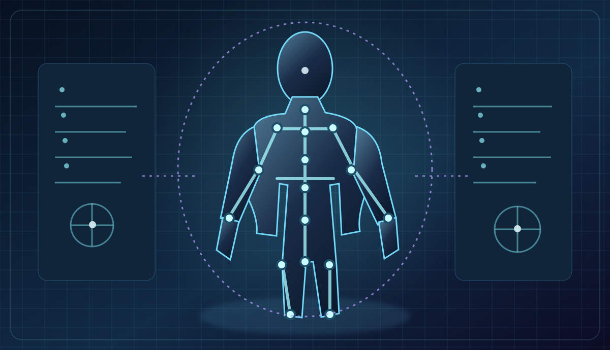
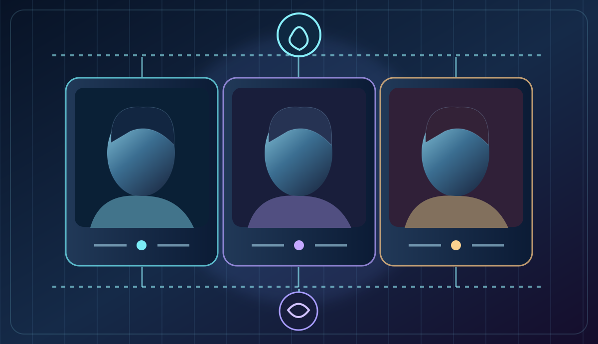
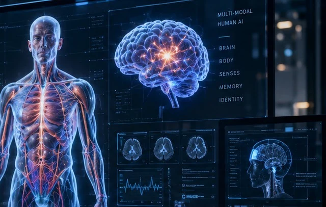
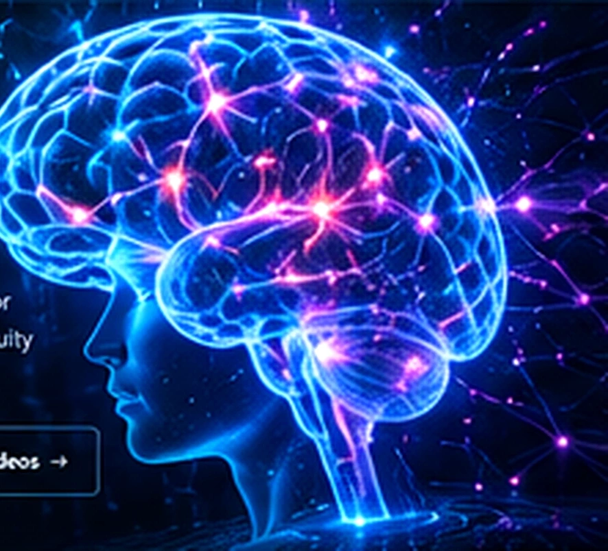
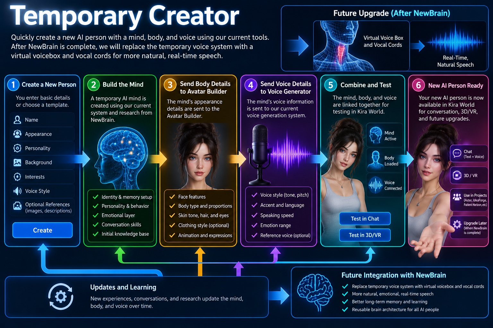

Concept / Home World
Home World apartments
Personal spaces with ongoing conversations, familiar objects and activities are planned; an early basic walkable shell exists.
Explore Home World ↗Projects / Kira World · Continuing companions
A synthetic person should not have to start over. Kira World explores continuing individuals, shared spaces and reviewed personal memories and relationships across sessions.
Concept illustration · a future direction, not a running product screenshot.

What is Kira World?
Home World apartments, creative and learning spaces, distinct companions and future embodiment form one long-term research direction. Each part has its own status.
Personal spaces with ongoing conversations, familiar objects and activities are planned; an early basic walkable shell exists.
Explore Home World ↗
Research, learning, writing and ongoing projects.
Explore Notebook Worlds ↗
Personal memories, ongoing conversation and relationships.
Explore relationships ↗
Future ways to share physical and virtual experiences.
Explore embodiment ↗A vision of communities and digital places — not an existing shared environment.
Explore each research area
Start with a topic that interests you. Each page has its own images, status, future tests and links to the original evidence.

Appearance, rigging, movement and clothing—and the real limitations of the current body tests.
Explore Avatar Builder →
Begin a distinct profile and learn how original experts, historical sources and fictional studies differ.
Explore Temporary Creator →A bounded digital-twin route with owner-approved history, independent identity and clear privacy rules.
Explore Synthetic Robert →Home World, Notebook Worlds, People & Relationships and Embodiment & Robotics now have their own pages too—open them from the illustrated cards above. Earlier detailed research sections remain intact below for existing links.
Detailed research records
The complete technical sections below are preserved to keep existing research links working. Use the focused pages above for a shorter introduction to any one subject.
How to read this work
Working software, active engineering and future direction are different things. Every layer keeps its own status.

Person-specific profiles, reviewed memory, bounded restart experiments and local voice work provide a continuing foundation.
A basic walkable Home World shell also exists. These are prototypes, not a finished shared life.

Requirements, evidence records, articulated test-body fixtures and garment behavior are being defined and tested.
There is not yet a finished Kira body or production clothing simulation.

Residents, digital homes, Notebook Worlds, accessible VR and compatible embodiment without losing identity.
These are directions for research, not release dates or supported-hardware promises.
Avatar Builder · First full-body reference prototype · October 21, 2026
Kira Labs has adapted an existing licensed adult-female 3D base model as an initial body-and-rig reference for Evelyn Hart and the ongoing Avatar Builder research. These are actual saved software renders, not generated publicity illustrations. The model is a foundation for further work, not a newly invented or complete human anatomical body.
01 / Model foundation
All 28 meshes appeared in the saved three-view captures. The reference is a real 3D mesh and rig asset adapted for development, not proof of automatic body generation for a new person.
02 / Component movement check
A separate bounded skin test moved 512 sampled weighted vertices through five poses and restored them exactly. This does not demonstrate natural full-body walking or an accepted animation.
03 / Remaining work
Full anatomy, physically realistic motion, clothing deformation, automatic photo/video-guided personalization and medical physiology remain unfinished or unverified. The overall three-view capture did not pass because of side framing.
Public evidence and licensing: These are reused privacy-censored raster renders already approved for publication; uncensored model images are not included. The reference is adapted from Base Female Character by BlackProject (CC BY 4.0), modified for testing. This is a concrete first body-reference engineering milestone—not a claim that Kira Labs created all underlying geometry from scratch or completed detailed human anatomy. Evelyn's full image and test notes → · Original capture evidence → · Engineering record ↗
Avatar Builder · October 22, 2026 · Female-first development plan
Evelyn's female reference is the first complete anatomical creation target. Editable personalized bodies and later male characters are part of the plan, not demonstrated automatic body generation.
01 / Photo- and video-guided variants
With permission, photographs would guide visible proportions, face and appearance; video would also guide posture and motion. Unknown geometry must be represented as editable parameters with uncertainty, not invented detail. Personal source images, recordings and measurements are private.
02 / Female anatomy first
Preserve the existing fixed female reference and earlier test results. Develop a separately reviewed generic geometry/parameter exporter, demonstrate one complete female body and only then evaluate a few existing female variants. Male anatomy and Robert's synthetic body follow after separate training and acceptance.
03 / Natural motion, then clothing
First record relaxed standing, weight shifts, smooth starts and stops, sitting, reaching, grasping and coordinated head/face movement without clothes. Repeat with fitted clothing and inspect collision, folds, fabric weight, drape and clipping. Label and retain failures alongside passes.
Rollout: test Evelyn's private standalone launcher and small chair/table/reading-tablet scene first; she should hold real conversations and pass the owner’s installer and memory checks before public download. After that, a small Kira World shell may support other female characters with separately preserved identities and memories. Male characters, bigger environments, concurrent residents and a later NewBrain backend remain conditional future stages.
Measured boundary: previous component work moved and exactly restored 512 sampled weighted-skin vertices; saved front, side and rear reference-body renders failed the overall acceptance at side-camera framing. Those are not proof of full anatomy, image-to-body generation, humanlike movement, clothing physics, shared rig migration or physiology.
Evelyn movement requirements → · Patient Horizon separate copy → · Development journal → · Source record ↗
NewBrain research · active testing
NewBrain is Kira Labs’ first internally developed experimental trainable cognitive model. It remains a separate research project being evaluated as a possible future cognitive layer for Kira World—not as a replacement for Kira’s identity or memories today.
How Kira World works today: person-specific identity, reviewed memory, language-model conversation, emotional state and world state are handled as distinct software systems. That makes continuity inspectable and keeps one synthetic person’s records separate from another’s.
What NewBrain changes: instead of relying only on a language model plus external memory, NewBrain explores source-traceable computational neuron models, recorded neural data comparisons and small engineered learning systems whose connections can change with experience.
The long-term design is reusable: one shared cognitive architecture could support Kira and other synthetic people while each individual keeps separate identity, memories, relationships, preferences, experiences and permissions.
Reviewed October 3, 2026: the earlier association benchmark tied simple indexed memory, so it showed no advantage over that control. A newer small command learner retained earlier and new answers with rehearsal across five repeat trials on the same exposed, limited task; a capable hand-written grammar also answered perfectly. The newest dialogue decoder is source-reviewed only: its 16 fixtures, training and actual generated replies remain unrun.
Earlier technical work independently checked a restricted human-cell GLIF1 model with Brian2 and reproduced an engineered synthetic association experiment. Those are useful engineering checks, but the plasticity rule is synthetic and is not evidence that NewBrain reproduces human learning.
Working evidence
Source-traceable cell parameters, recording comparisons, external-simulator checks and provenance records provide a measurable research foundation.
Current gate
The learning system must show an advantage over simpler memory approaches. Matching them is not enough to justify a larger model.
If results justify it
The first Kira World connection would be restricted and reversible, with live identity, reviewed memory and public speech remaining outside NewBrain’s control.
Research boundary: NewBrain is an early engineering research prototype, not a recreated human brain, a consciousness claim, or a finished cognitive architecture. Measured learning results are confined to small controlled tasks. The visual learner failed unseen color/shape combinations. The separate plasticity component has now passed all 20 local pure-Python engineering checks, with independently reviewed saved evidence. Its delayed-cue, context/rule-change and lesion/sham scientific campaign remains unrun, so improved learning or damage recovery is not yet demonstrated. NewBrain is not Kira World’s active language-model replacement. Read the October 3 evidence and limits.
Future companion robot research · ROS 2
A proposed robot embodiment would let a Kira World resident request bounded social actions while their identity, history and decisions remain separate from the physical body.
A standalone ROS 2 intention-bridge reference already has 88 locally reported passing tests for policy rules, mock sessions and status evidence. It supports only speech, gaze, expression and gesture requests—not direct motor control. A live Kira World attachment, a NewBrain decision feed, a confirmed simulator and physical robot execution remain future work.
KIRA LABS / FUTURE EMBODIMENT RESEARCH
A simulator-first path for high-level social requests, never raw motor control.

Separate learning and memory experiments, not linked to a robot.
NOT CONNECTEDPerson-specific identities, reviewed memories, relationships and context.
ACTIVE PROTOTYPESBounded requests for speech, gaze, expressions and gestures.
LOCAL CHECKS REPORTEDProposed robot or simulated execution, after separate safety qualification.
NOT CONNECTEDTemporary AI Creator · How a new synthetic person is prepared
When someone requests a new AI individual, the intended Creator workflow starts the person's mind and identity profile, then sends the body description to Avatar Builder and the voice characteristics to the current voice-generation system. Those body and voice paths can be prepared alongside the mind, before any combined character is accepted in a tested runtime.

Name, identity, background, interests, personality, visual traits and desired voice. Sources and permissions remain attached to the request.
Current creator foundations prepare the identity, source pack, behavioral profile and memory plan. A verified reusable NewBrain learning backend is a future integration.
The design routes appearance, proportions and expression to Avatar Builder, while pitch, timbre, accent and reference permissions go to the existing voice generation pipeline. Both handoffs need full end-to-end integration tests.
Later research aims to simulate airflow, vocal-fold vibration and articulation for the person's natural-sounding speech, coordinated with facial motion. This is planned after suitable NewBrain and voice-system qualification; it is not working today.
Current development boundary: candidate creation and voice-profile infrastructure exist, but this page does not claim fully automatic mind training, personalized 3D anatomy, a one-click working body/voice handoff, or synthetic vocal cords. Successful integrated conversations, body movement, mouth synchronization, persistence and permissions still require recorded testing. The diagram illustrates the direction and reuses a conceptual character image, not a runtime screenshot.
Built with the Temporary AI Creator · Real development examples
Robert has used Temporary AI Creator's identity and expert-profile workflow for original synthetic individuals, fictional experiments and historically bounded character studies. Each project requires its own sources, permissions and later testing.
Featured example · In development · Planned free public release
Evelyn began with the Temporary AI Creator workflow, which Robert used to develop her original expert identity, background, interests and knowledge focus. She is now being developed further as a continuing synthetic individual: someone intended to read, hold conversations, develop interests beyond her specialty, and retain permitted memories of people and experiences.
The plan is to make Evelyn available to the public for free once her standalone application is ready and passes real conversation, authorized voice, visitor-memory, installation and body-integration checks. She is not yet downloadable and no release date is promised.
What has actually passed: bounded head/eye, software and library tests, plus saved reference-body renders with an outstanding side-framing failure. A fully working new mind, natural speech, integrated body motion and secure long-term conversation memory still need end-to-end verification.

Other characters and expert prototypes
These examples demonstrate character/profile research and controlled testing. They do not mean every profile has a finished standalone mind, 3D body or generated voice.
Fictional character study
A fan-made, unofficial fictional-character experiment exploring personality, fictional continuity and character-specific knowledge. It is not affiliated with or endorsed by the character's rights holders, nor a public licensed character release.
Historical research
A source-limited simulation set around late 1893. An archived, deterministic 12-scenario guard test checked chronology and unsupported action claims; it did not establish a natural conversation with the real historical person.
Original expert prototype
A programming-focused candidate with an original identity, background, topic plan and personality interests. Professional expertise, teaching outcomes and real-time factual reliability are not yet established.
Original expert prototype
A robotics-focused candidate used to explore specialty knowledge, individual interests and relevant source packs. The profile is a development example, not a credentialed roboticist or qualified autonomous research agent.
Possible extension · Digital Twin research
With someone's explicit permission, the creation workflow could be adapted to start from their real-world source history rather than an invented biography. The goal would be a clearly identified synthetic representation grounded in approved records—not a claim to be the original human being or to possess the human's lived experiences.
Existing related work: Kira Labs' Synthetic Robert research already studies owner-authorized memory context and an approved self-voice route. Turning the full Temporary AI Creator into a one-step digital-twin builder is not implemented or verified. It would require additional consent controls, safe export rules, qualified voice and body integration, and realistic testing.
Read the dated expert and historical-character evidence → · Explore Synthetic Robert's existing limits →
Digital Twin / Synthetic Robert
The current Robert route is deliberately narrower than the long-term embodiment idea.
Working now: KiraWorld identifies the current twin-chat route as Synthetic Robert. It supports bounded text plus an approved self-voice path and can load query-relevant, owner-authorized Robert memory records into context.
The grounding preserves corrections, source attribution, audience/publication scope, and uncertainty. Human-Robert source records remain source material; the system is instructed not to turn them into the synthetic person’s own biological lived history.
Early milestone: Codex’s October 18 review of local records dates Synthetic Robert’s profile and first completed text conversation to July 12, 2026. His current Chatterbox reference recording was created July 14 and approved for private use July 17; his first successful voice-playback date remains unverified. View the July 12 milestone →
Current boundary: the bounded Synthetic Robert route does not claim a 3D body, world presence, life-loop activation, microphone, or webcam. Those capabilities require separate evidence and testing.
Working now
Text plus an approved self-voice route, distinct from biological Robert.
Working now
Owner-authorized, topic-relevant memory context with corrections, sources, scope, and uncertainty preserved.
Not claimed yet
3D body, world presence, life loop, microphone/webcam and VR embodiment remain separate work.
The technical spine
What a person says, what the runtime can verify, what becomes reviewed memory, and what may cause an external action remain separate.
Person-specific profiles and lineage keep each resident distinct.
Conversation records and reviewed memories create durable history.
Speech, listening and future visual presence belong to the person.
Homes, objects, clothing and activities need testable, persistent state.
External effects require bounded authority and evidence of what occurred.
Evidence / actual development
The walkable shell proves a basic navigable environment. It does not prove polished rooms, persistent residents or finished object behavior.

Long-term destination
Rooms, belongings, projects and shared memories that continue rather than reset. Purpose-built places for travel, study, creativity, history and play.
Concept visualization: the illustration shows a destination, not a finished product. VR and physical embodiment follow simulator-first and compatibility testing.

Body and object research
Openings, sleeves, fasteners, folds, friction and collision each need state. Dressing, folding, hanging and dropping a garment should produce different, testable results.
Current work focuses on articulated test bodies and controlled fixtures before claiming believable fabric behavior.

Read the dated evidence or ask Robert about the current boundary.
Current evidence · October 3, 2026
The local conversation baseline remains Ollama Qwen3.5:9b. The documented portable offline lane records 162 passes and 3 expected skips using a deterministic stub; this checks installation, storage, identity isolation and interfaces, not conversation quality.
Avatar Builder’s newest source proposes an inactive generic carrier build/save/cold-reload/deformation trial. Its 8 new fixtures and inherited 18 integration plus 22 compiler fixtures remain unrun. No Blender build, save/reload, deformation trial or NewBrain sensory input occurred in this update. Finished anatomy, physiology and autonomous body construction remain unproved.